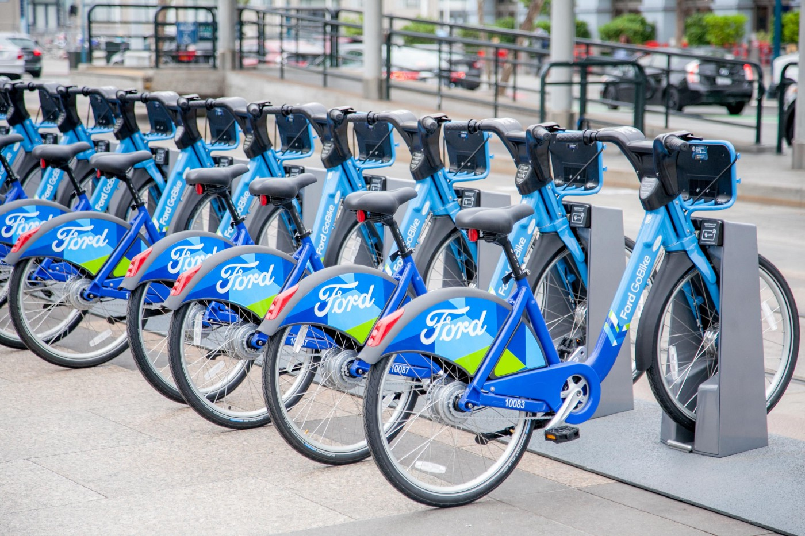
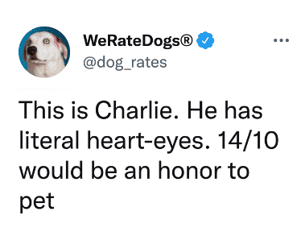
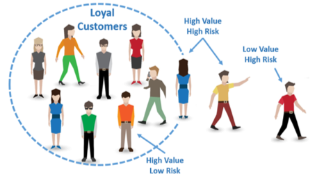
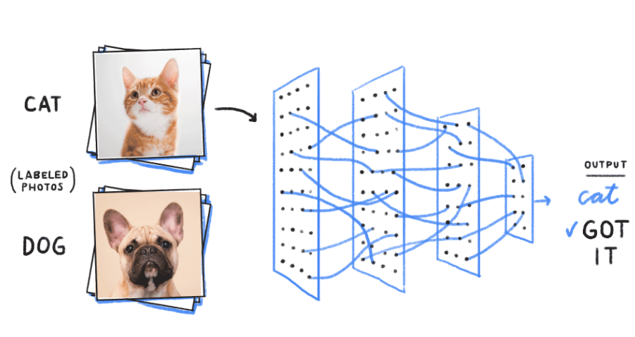

In this project I will classify sentiment based on review text, performed data cleaning and pre-processing by Stemming, stop-word
removal, and Lemmatization and we will apply Logistic Regression classification with TF-IDF to classify the data, also, we will use Streamlit framework
to create a GUI that takes input the food review and returns whether it’s a positive or
negative review.

Scraping the data of Wuzzuf which is a famous website in online job search
Performing Data cleaning, analysis and visualization in the data to Discover the most needed fields and jobs in the
software industry and the requirements of the labor market

Data Assessing, Cleaning, Analysis the information about individual rides made in a bike-sharing system covering the
greater San Francisco Bay area.
Performing different types of visualizations to answer questions that helps in improving the service provided

WeRateDogs is a Twitter account that rates people's dogs with a humorous comment about the dog. These
Tasks covered in this project:
Data wrangling(Gathering data, Assessing data, Cleaning data)
Storing, analyzing, and visualizing the wrangled data

This data set contains details of a bank's customers and the target variable is a binary variable reflecting the fact whether the customer left the bank (closed his account) or he continues to be a customer and we will use Artifical Neural Network to make this classification

We will analyze and visalize TMDB movie data which containes information about 10,000 movies from The Movie Database (TMDB) using python and we will make static and interactive viusaliztion ysing plotly and matplotlib libraries

The dataset is comprised of photos of dogs and cats provided as a subset of photos from a much larger dataset of 3 million manually annotated photos. The classification is done using convolutional neural networks